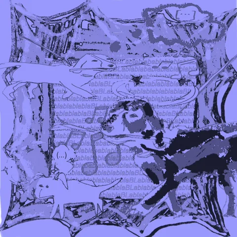
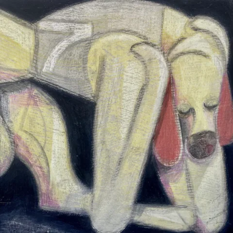

otopark
jeanny
listen to jeanny on spotify

sonication
listen to sonication on spotify

overflow @ einmal sessions
watch our performance of overflow on einmal sessions
spotify
apple music
bandcamp
instagram